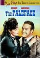
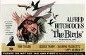

Welcome to our Girly Book Club! Join us as we read our way through some of the great classics.
It is a truth universally acknowledged, that of all the book clubs, ours is the handsomest! Have you guessed which author we�ve chosen to begin with? Yes, it�s the lovely Jane Austen. We are currently reading our way through her six completed novels in order of publication. Once the task is complete Daisha has offered to take readers on a Jane Austen tour (provided they can get to England) including famous Austen sites such as Chawton, Bath, Southampton, Winchester Cathedral, etc. Alternatively, we can have a costume drama movie marathon.
Currently Reading:
Sense and Sensibility (1811)
Completion/discussion date: August
(via Skype conference call)
Coming Attractions:
Pride and Prejudice (1813)
Mansfield Park (1814)
Emma (1815)
Northanger Abbey (1817)
Persuasion ( 1817)
Proposed Future Reads:
Elizabeth Gaskell Stuff
Bronte Stuff
Dickens Stuff
George Eliot Stuff
The Count Of Monte Cristo
The Scarlet Pimpernel
Alice's Adventures In Wonderland
The Old Man and the Sea
Moby Dick
Current Members:
Karen,
Melanie,
Natasha,
Daisha,
Tiana,
Shira,
Kaylynn,
Kira?
TUFFCLUFF BEDTIME BOOK CLUB
Welcome to our Bedtime Book Club! Join us as we read classic kid's books to our children.
Currently Reading:
For Tiny Tots: King Bidgood's in the Bathtub (1985)
For Biggish Kids: Winnie-the-Pooh (1926)
Proposed Future Reads:
The Rainbow Goblins
Charlie and the Chocolate Factory
Alice in Wonderland
Pippi Longstocking
Where the Sidewalk Ends
Bridge to Terabithia
Charlottes Web
James and the Giant Peach
Current Members:
Melanie
Daisha
Tiana
Shira
THE HAPPY LITTLE FIT CLUB By Shira
Personal Trainer Challenge
This Month: Try to do 15 push-ups, (no cheating, not on your knees). Bet you can't.
TUFFCLUFF FILM CLUB
JANUARY:
Cuddle up with your 'frozen skinny lover' and watch Barefoot in the Park (1967) this January. It's the perfect winter heart warmer.
It's January. You're feeling fat from the Christmas excesses, you're feeling depressed because you've already broken your New Years resolutions and you're feeling cold because it's the dead of winter. You think you have it bad? Spare a thought for the poor Cheyenne Indians in Windwalker (1980) who were sometimes so hungry that they would even eat meat that was pre-chewed by a six year old, who's minor problems included being killed/kidnapped by the Crow every time the left the teepee and who had to kill a bear and make a coat if they wanted to get warm in the snow. Force your family to appreciate how great they've got it by making them watch this film. We had to!
This season our wild card movie pick is the musical Oliver! (1968). It's a great family treat with toe tapping tunes and cool characters. Nobody warms your cockles like Mr. Dickens.
The Great Race (1965) This is an all time Cluff favorite with dozens of great one liners that are still in circulation among the first batch to this day! The iceburg scene gives it a nice themey feel for January, but there's more - so much more. If you haven't introduced your kids to this one, you're doing them a disservice. It's whole lot of fun for the entire family - and anyone who thinks different shouldn'ta, hadn'ta, oughtn'ta!
FEBRUARY:
You just can't go wrong with Groundhog Day (1993), a fantastic modern classic. Feb. 2nd is the actual Groundhog Day (see the Cluff groundhogging guide)
For Valentines Day this year check out the rom-com that has it all; Fencing, fighting, torture, revenge, giants, monsters, chases, escapes, true love, miracles... It's The Princess Bride (1987) of course! Who could resist the charms of this nearly-perfect chick flick?
This winter our wildcard is movie is Ma and Pa Kettle (1949). It's a bit hit and miss but still fun to re-watch if only to remember the fits of laughter Mom and Dad used to get into as they watched.
The Vicar of Dibley (1994-2007) Ok, ok, it's not a movie but it's a seriously funny British sitcom with a bit of romance thrown in. This little series will make you thankful for those long winter nights - so you can spend them watching the next episode! There are only 18 episodes and five specials in all. It may be difficult to get hold of in the US, but it IS available on Netflix. Give it a chance (at least a few episodes to get into the swing of things) and you won't be disappointed!
Kind Hearts and Coronets (1949) A Fab British black comedy! You'll die laughing at the talented Alec Guinness playing half of the movie's characters. And if that isn't enough, Time magazine rates it on their top 100 list!
MARCH:
If you wish a little 'luck o' the Irish' would rub off on you then watch a young James Bond in Darby O'Gill and the Little People (1959) and maybe it will. This is a dated but fun movie from the Disney vault and one that I'm sure Sean Connery would rather was kept under wraps. Still it's a good laugh. But I didn't always think so - as a child this movie gave me more nightmares than any other (stinkin' banshee). Though now when I look back at it I'm stunned I was so convinced by the terrible banshee graphics. In scenes where I used to wet my pants with fear, kids of today would probably wet their pants with laughter!
It's Spring Break and probably raining so what to do with the kids? Why not acquaint them with a few of your old guilty pleasure movies: Chitty Chitty Bang Bang (1968), Bugsy Malone (1976), Superman (1978), Watership Down (1978), Airplane (1980), Caddyshack (1980), Popeye (1980), The Cannonball Run (1981), The Dark Crystal (1982), Secret of Nimh (1982), Return of the Jedi (1983), The Karate Kid (1984), The NeverEnding Story (1984), Back to the Future (1985), Better off Dead (1985), Clue (1985), The Goonies (1985), Labyrinth (1986), Ernest Goes to Camp (1987), The Naked Gun (1988), Willow (1988), Joe Versus the Volcano (1990) or any other embarrassing movies of which you are particularly fond.
Celebrate St. Patrick's Day by watching the geriatric Irish comedy Waking Ned Devine (1998). It's quirky, fun, imaginative and an award winner. A modern classic.
APRIL:
Celebrate April Fools Day by checking out the slapstick classic The Long, Long Trailer (1954). No one gets into more silly scrapes than Lucy. She is April Fool's Day personified.
Speaking of April Fools...Tuffcluff heartily recommends watching a fantastically bad B movie double feature; Plan 9 from Outer Space (1959) and Manos: The Hands of Fate (1966). First, 'Plan 9' is famous for being the worst movie of all time. It will have you rolling with laughter - though it's actually meant to be a drama. The sets are flimsy, the narrator weird, the acting dire and the main character, Bella Legosi, is actually only in one shot, then for the rest of the film he is played by a poor double trying to hide his face so you won't notice! It's just so much fun! Next is 'Manos'. It's about a couple that drives around for AGES!!! then gets lost and finds a motel that is run by a devil worshipping cult. Keep an eye out for the crazy-legged character named Torgo - he's fantastic! You'll never forget these two little gems! Best worst movies ever!
Celebrate Easter by watching religious blockbuster The Ten Commandments (1956), a Sunday staple in the Cluff household for years.
Celebrate CHOCOLATE this Spring with our wildcard movie, Willy Wonka and the Chocolate Factory (1971). A cracking good yarn, despite the fact that the Oompa Loompas will give you nightmares! If your kids won't watch anything from the 20th century, try the equally delicious Charlie and the Chocolate Factory (2005), though the Oompa Loompas are still freakazoids!
MAY:
Celebrate Cinco de Mayo by going to see Nacho Libre (2006), a hilarious Mexican wrestling movie from the makers of Napolean Dynomite.
This season our wild card movie is a guilty pleasure The Scarlet Pimpernel (1982). It may not be the most worthy version of this film, in fact it's just a lowly TV movie, but it was still nominated for three Academy Awards and won an Emmy (though it was only for costumes). The biggest thing about this movie is Jane Seymour's hair (which even puts Diana's 80's hair to shame) but there's much more than big hair to keep the whole family entertained. Anthony Andrews gives a 'dandy' performance that is truly delightful. Sink me if this isn't the best 1980's TV movie ever!
Disney's live action films have been very hit and miss over the years. Here are the very BEST of the WORST: Darby O'Gill and the Little People (1959), Babes in Toyland (1961), That Darn Cat! (1965), The Gnome-Mobile (1967), The Happiest Millionaire (1967), The Love Bug (1969), Bedknobs and Broomsticks (1971), The Apple Dumpling Gang (1975), Escape to Witch Mountain (1975), Freaky Friday (1976), Gus (1976), The Shaggy DA (1976), Candleshoe (1977), Pete's Dragon (1977), The North Avenue Irregulars (1979), Tron (1982) and finally George of the Jungle (1997).
JUNE:
Some Like it Hot (1959) was ranked number one on the American Film Institute's list of 100 Funniest Movies of all time. It's not just an American classic, it's a Cluff classic as well. If you haven't seen this movie, you aren't fit to call yourself a Tuffcluff! This movie has it all, action, comedy, romance, suspense, cross-dressing, type-O blood and the list goes on... It really IS one of the greatest films of all time!
This Summer our wildcard movie is The Sound of Music (1965). Yes, you've seen it a thousand times and it's one of your favorite things, but now a good thing just got better with the release of the Sing-Along version! Make a night of it like they do in NY and London and dress up in crazy S.O.M. costumes (nun, brown paper package tied up with string, white dress with blue satin sash, leiderhosen, chintz curtains, snowflakes on your nose and eylashes etc..) then boo the Nazis, hiss the Baroness, bark at Rolf, cheer for Maria and whistle at the Captain. It's a riot for the whole family!
JULY:
You probably know that July is the 7th month of the year and that 7 is a lucky number, but did you know that filmmakers love the number 7? There's Seven Brides for Seven Brothers (and the Indian version, Satte Pe Satta), Snow White and the Seven Dwarves, The Seven Year Itch, Seven Alone, Seven Years in Tibet, and there are even movies called Seven and 7! But there's more, we all love The Magnificent Seven, but did you know that it was based on an excellent Japanese film called Seven Samurai? So Magnificent Seven was a rip off Seven Samurai but then (and here's where it gets weird) The Three Amigos was a rip off of Magnificent Seven, plus A Bug's Life was a rip off of them all! There are so many seven options, why not try to watch seven Seven movies this month, maybe it'll bring you good luck.
AUGUST:
It's the perfect month to sit back with a big bowl of blackberries over ice cream and watch a movie marathon. Bask in nostalgia this August by watching an Anne of Green Gables (1985) miniseries marathon. It won an Emmy and is lots of fun. Anne of Green Gables: The Sequel (1987) is less interesting (it's only good for a few minutes at the beginning and a few minutes at the end) and Anne of Green Gables: The Continuing Story (2000) is untested ground. Get started now because each movie runs about 200 minutes long!
Despite being a story about striking it rich, the wildcard movie this summer is an antidote to all of this silly nonsense about bad and good luck. The Treasure of the Sierra Madre (1948) is a sober reminder that life is not fair. It's about friends, enemies, greed and guilt. It's a fantastic character study and surprisingly fun for the whole family. How could they resist Howard, the spry old codger or the humorous Mexican bandits; "Badges, we don't need no stinking badges!"?
SEPTEMBER:

This autumn our wildcard is a no-brainer double feature with Bob hope as the common thread, it's: The Paleface (1948) and Casanova's Big Night (1954). Paleface has got to be the most watched Cluff video of all time! Large swathes of dialogue are committed to the memories of Cluff children the world over and should be passed down through the generations as a sacred rite. It may have been filmed in the 40's (P.C. it ain't) but even the jaded, media-saturated 'kidz' of today will still appreciate the silly plot and laugh-a-minute dialogue. Best Bob Hope movie ever! There is also a sequel, Son Of Paleface (1952), which some swear is as good as the original (it is not). Casanova's Big Night is even sillier. It can't quite compete with Paleface, but kids will love a second chance to see Bob play another idiot. This time he's in Italy trying to woo the ladies and keep one step ahead of trouble. Just a little bit of brainless fun.
We all love What's Up Doc (1972) with Barbra Streisand, but did you know that it was based on the equally hilarious Bringing Up Baby (1938) with Cary Grant and Katharine Hepburn Swap the overnight cases with a leopard and play spot-the-similarities. If you haven't seen these films you won't be disappointed - they're the best screwball comedies ever made! Even the kids will love 'em (despite the latter being B&W). Check them both out for a fun, family double-feature in September.
It may be a bit of a chick-flick and its production value may only be slightly better than a made-for-TV movie but The Man from Snowy River (1982) is still a whip crackin' good film - a real Cluff family classic! It's an Aussie cowboy movie with plenty of romance, adventure and comedy - albeit inadvertent comedy (ie: the scene where the wild brumby nearly tramples Jim to death in home-movie-style-stop-motion-editing! Classic!) But don't let that put you off because after spending some time with the man from the river that is snowy, you'll be inspired - just the way Melanie and Tasha were inspired to learn "Jessica's Theme" on the piano or Daisha and Tiana were inspired to learn fake Australian accents ('Spur'!). Watch it tonight!
Ferris Bueller's Day Off (1986) A fun back to school movie.
Bus Stop (1956) Not the best Marilyn Monroe movie of all time, but still thoroughly enjoyable if you can get past the implausible stupidity of Bo the cowboy. Pair it with a rodeo themed BBQ for a rootin' tootin' fun family evening!
OCTOBER:
Carry on with the Cary Grant theme by watching Arsenic and Old Lace (1944). If you haven't seen this hilarious Halloween movie, there is no better time than this month. Originally a Broadway play, it was turned into an excellent movie by director Frank Capra (the same guy who did It's a Wonderful Life). Guaranteed to make you giggle (if only at Cary Grant's hyperactive shenanigans).

For a spooky no-brainer movie this Halloween try watching The Birds (1963). It's a classic Alfred Hitchcock thriller, but without all the twists and turns - just a lot of weird, mean birds. That's not to say it doesn't have suspense, its suspense continues well after the movie has finished because you never find out why the birds are so mental! Still, it's a fun ride even if nothing really deep is going on (unless you believe the conspiracy theory that it's an anti-smoking film since the birds only seem to attack whenever anyone lights up!). After watching this movie, you'll never look at a flock of birds the same way again.
Counteract the spooky side-effects of Friday the 13th by checking out Freaky Friday (1976) for a few tips. Learn what not to do from Jodie Foster in order to avoid magically switching places with your mom- ugh! Best line: "Ah! Macaroni and cheese, breakfast at last". Best name: Toss up between "Boris" and "Mrs. Schmauss". Best summed up in two words: guilty pleasure.
The Legend of Sleepy Hollow (1949) This classic Disney short narrated by Bing Crosby is a fantastic little story that will amuse the entire family. It really is one of the very best family Halloween movies of all time, so if you haven't seen it you're in for a trick and a treat.
NOVEMBER:
I know you won't like this suggestion but you really should watch The Emigrant Saga (1971) this month. It's traditional and, as shocking as it sounds, the movie isn't actually all that bad (nominated for five Oscars, including Best Picture). This movie has everything; explosions (albeit a little girl's stomach), scandal (a prostitute with lice), horror (Karl-Oskar's relentless advances toward his poor ever-pregnant wife) and so much more! Come on, you know you wanna see it. However, you should know that it's true title is 'Utvandrarna' which translates into 'The Emigrants' (in case you're trying to find a hard-to-get-hold-of copy). Give it a real chance and who knows, you may end up loving it so much that you'll rent the sequel, 'The New Land'.
It's a Mad, Mad, Mad, Mad World (1963) is not just brainless slapstick entertainment, it's also a Cluff Family Thanksgiving tradition! The movie is basically a vehicle for a big group of comedians to show their stuff in a wacky collage of gags and one liners but, at 182 minutes, a few of the plotlines can get tiresome (stinkin' Mickey Rooney and Buddy Hackett). All in all it's a zany family adventure chock-full of laugh-out-loud moments and even a little porn (Sylvester lifts his leg a bit too far in his tight red shorts to reveal more than he bargained for! You may need to use slow-mo to see it properly - not that I'd know!). Still not convinced? Then, if for nothing else, watch it for these fantastic four characters alone; Mrs. Marcus, Sylvester Marcus, Lennie Pike and Lt. Col. J. Algernon Hawthorne. Enough said.
Cheaper by the Dozen (1950) Based on a real story, this heart-warming movie is sure to tickle the funny bone of anyone from a larger family (so all of us except Edward). An interesting piece of trivia from IMDB: "The big house the family moves to in Montclair is the same house set originally built for Judy Garland's family in Meet Me in St. Louis (1944). Fox didn't have an appropriate standing outdoor set so they rented time on the "St. Louis Street" on MGM lot #2." With such great connections, it's no wonder we all love this movie!!
DECEMBER:
Have a retro Christmas with the kids this year by watching all the old, nostalgic stuff they used to show on TV every year: Dr. Seuss's How the Grinch Stole Christmas (1966), A Charlie Brown Christmas (1965), Frosty the Snowman (1969), Rudolph, the Red-Nosed Reindeer (1964), Mickey's Christmas Carol (1984), Mr. Krueger's Christmas (1980), The Gift of Love: A Christmas Story (1983), The Muppet Christmas Carol (1992), etc...
Get in the festive spirit with It's A Wonderful Life (1946). Nominated for five Oscars, it is quite possibly the best Christmas movie ever made. Some say it's the best 'feel good' movie ever too! Watch it this Christmas season and then vow to make it a yearly tradition.
If you haven't checked out The Nightmare Before Christmas yet, you've gotta see it. As toddlers, Dallas and Weston watched it so many times that that their mother began to suspect it contained addictive subliminal messages to get kids hooked on TV! True story.
For Family: An oldie but goodie, Meet Me in Saint Louis is perfect to watch at this time of year since it has fabulous Halloween and Christmas scenes.
Swiss Family Robinson (1960) At first glance this may not seem like a Christmas movie, but take a closer look and you'll find a festive little Christmas section tucked in there somewhere between the cross-dressing and the coconut bombs! See, this little gem is much more exciting than you remember. And it's implanted some of us with a life-long desire to be stranded on an deserted isle!